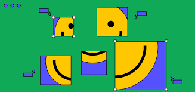

COLABORAÇÃO
COLABORAÇÃO
De todas as ferramentas que pesquisamos (Figma, Adobe XD e Sketch), o Figma se destacou no quesito colaboração, por permitir que múltiplas pessoas de diversas áreas da empresa possam trabalhar em um arquivo ao mesmo tempo. Ver mais...